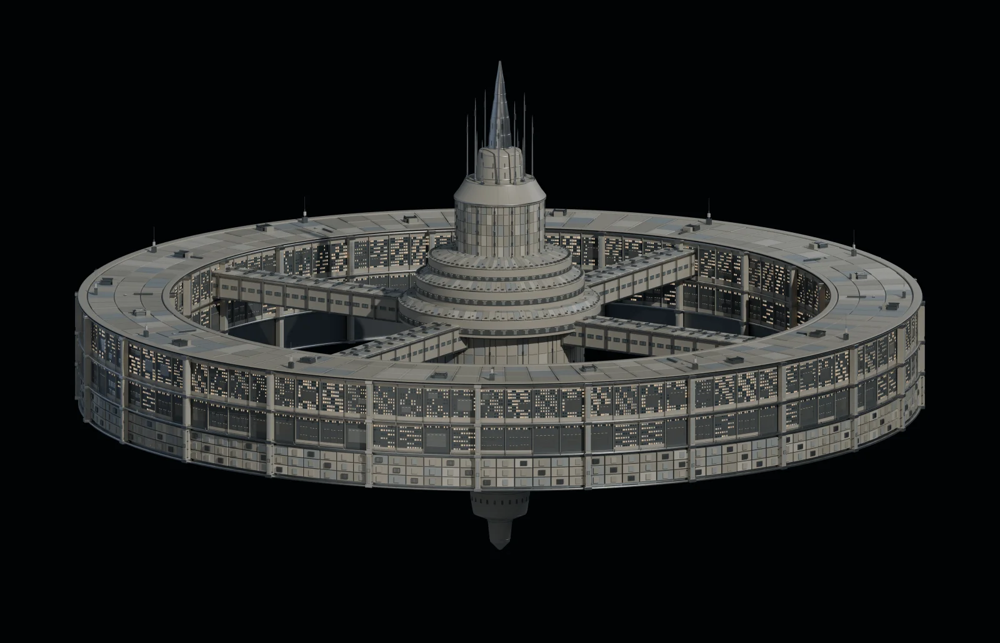

Моаг · 3D-модель
moag041 · v05 — внешний объём станции

41 МБ · вращение, приближение и осмотр снизу
Загружаем модель…
Потяните модель, чтобы повернуть. Колесо мыши или два пальца — масштаб. Shift + перетаскивание — смещение. Стрелки на клавиатуре — поворот.
Рабочая 3D-версия по концепту moag041. Свет и мелкие детали адаптированы для браузера; геометрия и размеры остаются предложением для обсуждения.